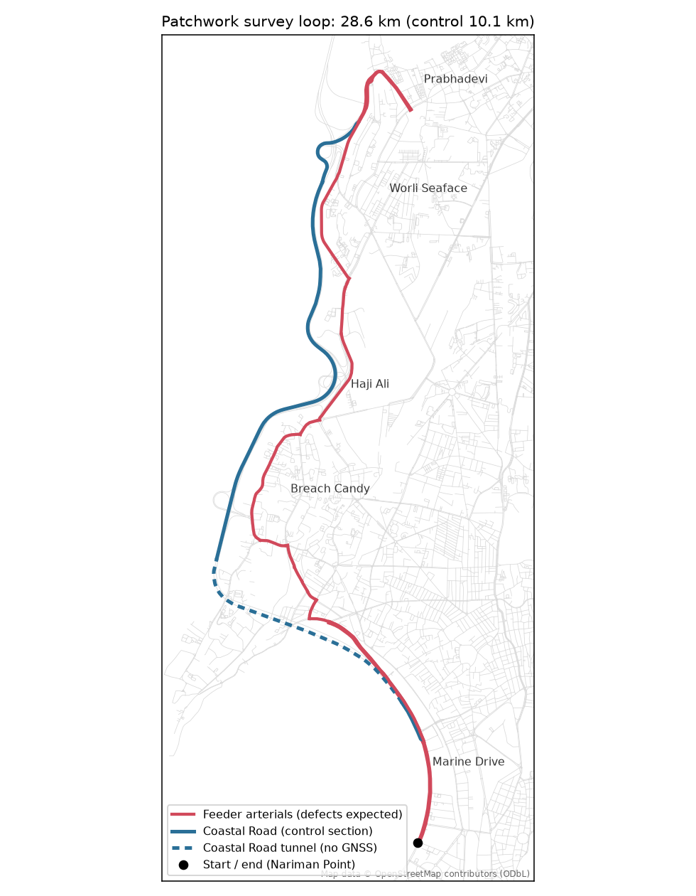
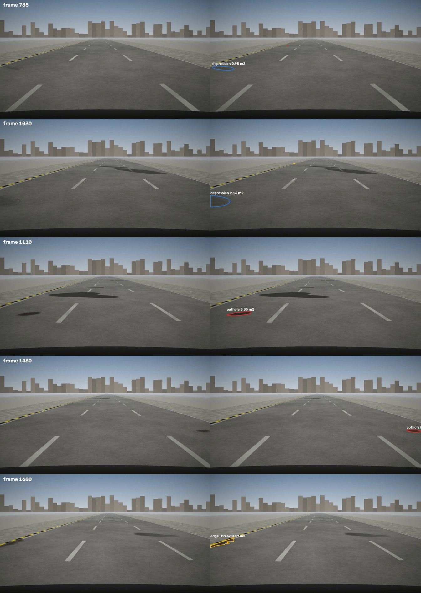
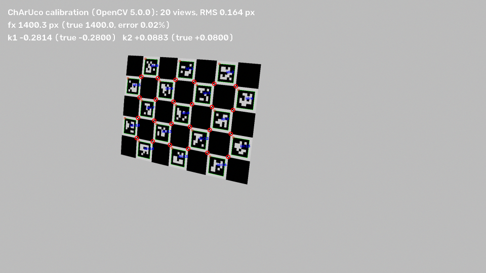
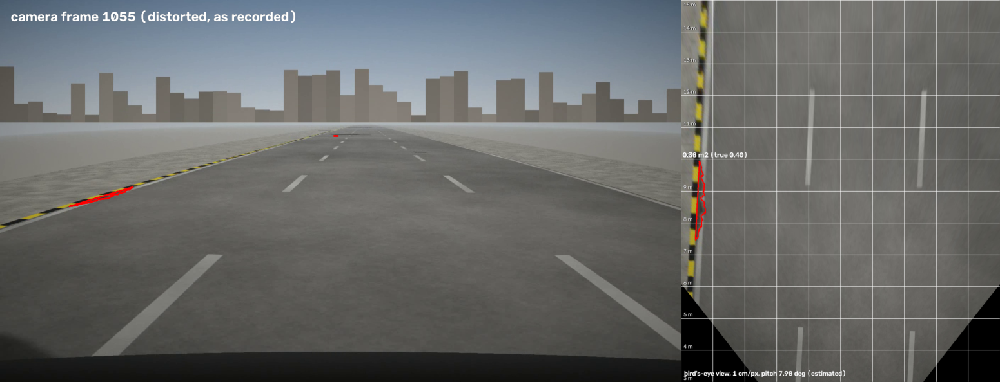
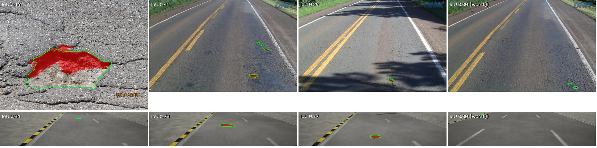
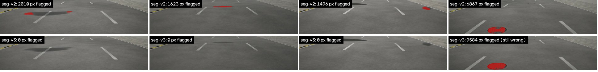
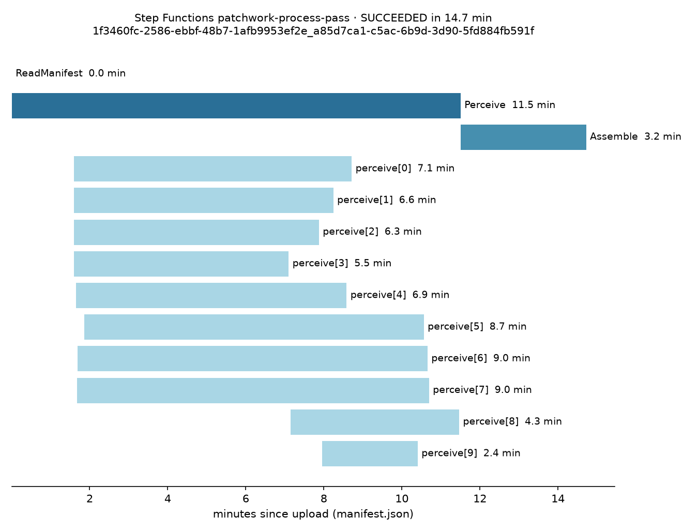
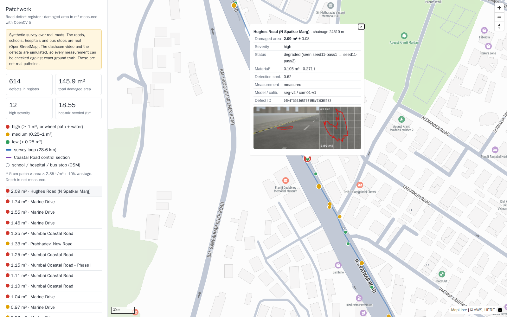
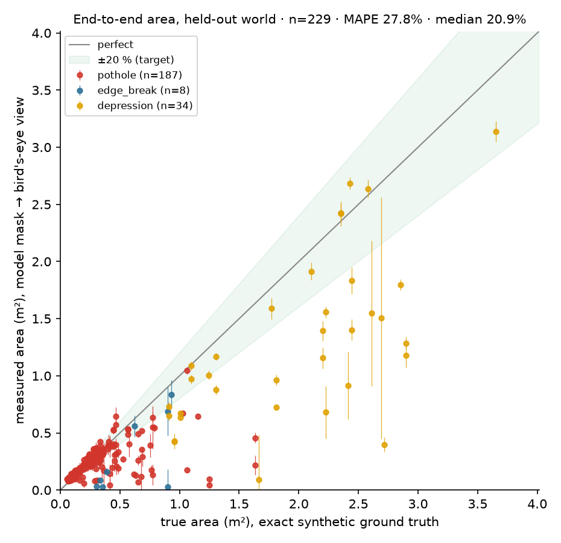

A road-defect register from ordinary dashcam video: damage measured in m² with OpenCV 5, tracked pass after pass, turned into repair work by an AI agent that cannot act without human approval.
Mumbai · AWS ap-south-1 · OpenCV AI Competition 2026, Agentic Vision · Midpoint checkpoint · 14 October 2026
Detecting a pothole is solved. Knowing how big, where exactly, and whether it was really repaired is not.
28.6 km real Mumbai loop: Marine Drive, Coastal Road, Worli Seaface, Haji Ali (OpenStreetMap geometry, 84 schools / hospitals / bus stops).

Every pothole's true area, position and repair status is known exactly, so every number below is graded against truth, not against a tape measure.

ChArUco calibration (RMS 0.164 px) → per-frame road pitch from lane lines → bird's-eye view at 1 cm/px → area is a pixel count.


2.1% area error with perfect outlines (target ≤ 5%): the geometry is not the bottleneck. Frame triage keeps 284 frames/km and loses no defects; faces and plates are blurred before storage; median position error 2.6 m (raw GNSS 6.2 m).
Trained on CPU only (AWS Graviton Spot). Runs in ENGINE_NEW, identical to onnxruntime (max difference 2.0e-5, target 1e-3). The classic 4.x-style engine cannot load it at all.

Top: real photos (held-out test split). Bottom: synthetic dashcam strips (held-out road stretch). Green = truth, red = model. Worst cases shown on purpose. IoU 0.50 real / 0.57 synthetic.
1,788 frames of shadows, wet patches, manholes, seams and old repairs labelled “not damage”; seg-v2 → seg-v3 (2.7 h CPU, survived 3 Spot interruptions by resuming from S3 checkpoints).

| Held-out set | False-alarm images, seg-v2 | seg-v3 |
|---|---|---|
| Look-alikes only, no damage (480) | 86 | 41 |
| Real photos, test (318 without damage) | 73 | 54 |
| Synthetic Mumbai, val (719 without damage) | 64 | 23 |
Held-out survey: 2 passes, 56.8 km. One 28.4 km pass in 15–17 min wall-clock; perception compute $0.0021 per km (target < $0.02).

https://d3mt6jrs1ynczo.cloudfront.net · click a dot: area ± uncertainty, severity, status across passes, hot-mix estimate, and the dashcam view next to the measured top-down view.

Same survey, same pipeline, before and after the look-alike fine-tune.
| Metric | seg-v2 | seg-v3 | Target | |
|---|---|---|---|---|
| Recall (visible defects found) | 0.95 | 0.94 | ≥ 0.85 | met |
| False alarms per km, clean control section | 3.87 | 0.30 | ≤ 0.5 | met |
| False alarms per km, whole survey | 10.05 | 3.1 | – | |
| Area error (MAPE), end to end | 33.7% | 27.8% | ≤ 20% | not yet |
| Area error, geometry only (perfect outlines) | 2.1% (geometry, same for both) | ≤ 5% | met | |
| Re-identification across passes (F1) | 0.57 | 0.73 | ≥ 0.90 (final) | second half |
| Median position error | 2.6 m (localisation, same for both) | ≤ 8 m | met | |
| OpenCV 5 ENGINE_NEW vs onnxruntime | 2.4e-5 | 2.0e-5 | ≤ 1e-3 | met |
| Perception cost per km | $0.0019 | $0.0021 | < $0.02 | met |
Generated by make eval-midpoint from eval/results/*.json (04-RESULTS §1, §3).
Small and medium potholes sit near the diagonal (median error 18%). Large shallow depressions are still under-measured: the model marks only part of their soft edge.

Same pothole (Marine Drive, chainage 3193 m), same prompt, same model (Amazon Nova Pro, temperature 0). Only the measured area differs.
| Run A (as measured by the pipeline) | Run B (area swapped) | |
|---|---|---|
| Measured area | 0.35 m² (true 0.35 m²) | 3.10 m² |
| Priority (1 = urgent) | 2 | 1 |
| Exposure score | 5.86 | 21.70 |
| Hot-mix needed | 0.046 t | 0.401 t |
| Tool calls | query_defects → cluster_into_packages → estimate_materials → draft_work_order → request_human_approval | |
Priority and quantities are computed by tools from the register, so the change is caused by the measurement, not by model randomness. Unknown defect IDs are rejected by the tool and by a database trigger.
Agent, run A:
“…medium severity, an area of 0.3531 m², and is located near two hospitals… The estimated materials required are 0.0177 m³ of hot-mix asphalt.”
Agent, run B:
“…It has a priority of 1 due to its high severity, an area of 3.1 m², and its proximity to two hospitals. The estimated materials for this package are 0.155 m³ of hot-mix asphalt…”
Full traces: eval/results/agent/ablation-A-400AET.json, ablation-B-400AET.json
A Step Functions workflow holds the approval token in the database; the agent never sees it.
filed, ticket MOCK-aea1bb9b…: nothing is sent to a real authorityrejected, recorded as an overrideHonest note: the agent's final text summary listed one package twice. The packages, numbers and approvals in the database were correct, because code computes them, not the model's prose.
Every AWS service, step by step, is in 08-SERVICE-MAPPINGS. Billed from AWS Cost Explorer.
$0.00
real money paid; everything on promotional credits, guarded by a $0.01 budget alarm
| Billed by AWS (2026-10-12 → 13) | Usage |
|---|---|
| EC2 compute: dev workstation $4.21 · Batch Spot $2.20 | $6.43 |
| S3 (requests, cross-region transfer) | $0.86 |
| Aurora Serverless v2 register | $0.57 |
| Cost Explorer API (this report) | $0.42 |
| EC2 other (disks), VPC (public IPs) | $0.62 |
| Bedrock: Amazon Nova Pro (agent) | $0.33 |
| Secrets, ECR, Location, EventBridge, Step Functions | $0.01 |
| Total, all paid by credits | $9.23 |
The first half proved the pipeline at the cheapest settings. The second half buys accuracy and the full agent.